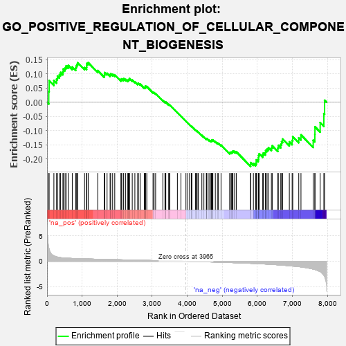
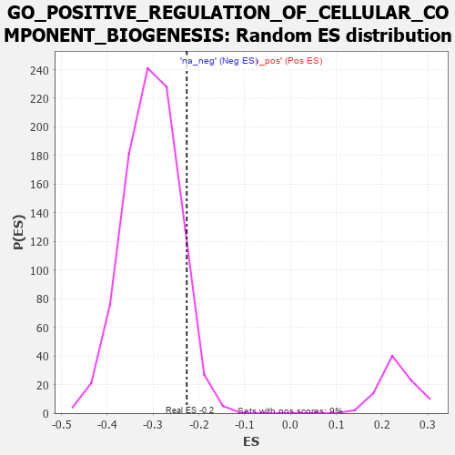

| | | Dataset | 7d |
| Phenotype | NoPhenotypeAvailable |
| Upregulated in class | na_neg |
| GeneSet | GO_POSITIVE_REGULATION_OF_CELLULAR_COMPONENT_BIOGENESIS |
| Enrichment Score (ES) | -0.22656718 |
| Normalized Enrichment Score (NES) | -0.7453576 |
| Nominal p-value | 0.92425907 |
| FDR q-value | 0.9996244 |
| FWER p-Value | 1.0 |
Table: GSEA Results Summary

Fig 1: Enrichment plot: GO_POSITIVE_REGULATION_OF_CELLULAR_COMPONENT_BIOGENESIS
Profile of the Running ES Score & Positions of GeneSet Members on the Rank Ordered List
| PROBE | GENE SYMBOL | GENE_TITLE | RANK IN GENE LIST | RANK METRIC SCORE | RUNNING ES | CORE ENRICHMENT | | 1 | TGFB3 | | | 49 | 2.654 | 0.0375 | No |
| 2 | RAC2 | | | 60 | 2.442 | 0.0764 | No |
| 3 | TPPP3 | | | 195 | 1.079 | 0.0771 | No |
| 4 | ULK1 | | | 272 | 0.875 | 0.0818 | No |
| 5 | FSCN1 | | | 297 | 0.830 | 0.0924 | No |
| 6 | TAPT1 | | | 354 | 0.743 | 0.0975 | No |
| 7 | BAX | | | 387 | 0.711 | 0.1051 | No |
| 8 | ERCC1 | | | 453 | 0.660 | 0.1077 | No |
| 9 | CNOT6 | | | 462 | 0.655 | 0.1175 | No |
| 10 | CNOT2 | | | 514 | 0.625 | 0.1213 | No |
| 11 | SRF | | | 542 | 0.615 | 0.1280 | No |
| 12 | DHX33 | | | 605 | 0.593 | 0.1298 | No |
| 13 | ID1 | | | 719 | 0.555 | 0.1246 | No |
| 14 | RPA1 | | | 817 | 0.527 | 0.1209 | No |
| 15 | LDB2 | | | 831 | 0.523 | 0.1278 | No |
| 16 | RPA2 | | | 851 | 0.519 | 0.1339 | No |
| 17 | WDR75 | | | 874 | 0.513 | 0.1396 | No |
| 18 | XPA | | | 1070 | 0.469 | 0.1224 | No |
| 19 | SRC | | | 1128 | 0.459 | 0.1227 | No |
| 20 | NCK2 | | | 1131 | 0.458 | 0.1300 | No |
| 21 | UTP15 | | | 1135 | 0.457 | 0.1371 | No |
| 22 | ERCC3 | | | 1173 | 0.451 | 0.1399 | No |
| 23 | RBX1 | | | 1445 | 0.401 | 0.1119 | No |
| 24 | DRG1 | | | 1633 | 0.368 | 0.0941 | No |
| 25 | DDB1 | | | 1642 | 0.366 | 0.0991 | No |
| 26 | TPPP | | | 1646 | 0.365 | 0.1048 | No |
| 27 | ERCC2 | | | 1712 | 0.354 | 0.1023 | No |
| 28 | FNIP1 | | | 1798 | 0.338 | 0.0970 | No |
| 29 | FMR1 | | | 1816 | 0.334 | 0.1004 | No |
| 30 | NUP62 | | | 1871 | 0.324 | 0.0988 | No |
| 31 | TASOR | | | 1931 | 0.316 | 0.0965 | No |
| 32 | BMP7 | | | 2107 | 0.290 | 0.0790 | No |
| 33 | SNF8 | | | 2119 | 0.288 | 0.0823 | No |
| 34 | MORC2 | | | 2171 | 0.281 | 0.0804 | No |
| 35 | SYK | | | 2186 | 0.278 | 0.0832 | No |
| 36 | CREB1 | | | 2243 | 0.269 | 0.0805 | No |
| 37 | WASF1 | | | 2303 | 0.259 | 0.0773 | No |
| 38 | MED25 | | | 2320 | 0.257 | 0.0795 | No |
| 39 | FAF1 | | | 2340 | 0.255 | 0.0812 | No |
| 40 | BCAS3 | | | 2352 | 0.253 | 0.0840 | No |
| 41 | MET | | | 2430 | 0.240 | 0.0781 | No |
| 42 | CDT1 | | | 2505 | 0.226 | 0.0724 | No |
| 43 | RIOK1 | | | 2586 | 0.215 | 0.0658 | No |
| 44 | MPP7 | | | 2606 | 0.211 | 0.0668 | No |
| 45 | VPS4A | | | 2654 | 0.205 | 0.0642 | No |
| 46 | RIOK2 | | | 2775 | 0.187 | 0.0520 | No |
| 47 | ATR | | | 2800 | 0.183 | 0.0519 | No |
| 48 | FER | | | 2803 | 0.183 | 0.0547 | No |
| 49 | BRK1 | | | 2805 | 0.183 | 0.0576 | No |
| 50 | CAND1 | | | 2845 | 0.177 | 0.0555 | No |
| 51 | WNT4 | | | 3023 | 0.146 | 0.0353 | No |
| 52 | PAN3 | | | 3054 | 0.142 | 0.0339 | No |
| 53 | CUL4A | | | 3097 | 0.137 | 0.0308 | No |
| 54 | SMAD3 | | | 3303 | 0.105 | 0.0063 | No |
| 55 | FMN1 | | | 3363 | 0.095 | 0.0004 | No |
| 56 | GMFB | | | 3381 | 0.091 | -0.0003 | No |
| 57 | DDX3X | | | 3388 | 0.091 | 0.0005 | No |
| 58 | CNOT1 | | | 3473 | 0.081 | -0.0089 | No |
| 59 | HGS | | | 3476 | 0.080 | -0.0079 | No |
| 60 | FES | | | 3501 | 0.077 | -0.0096 | No |
| 61 | HSF1 | | | 3718 | 0.039 | -0.0365 | No |
| 62 | CHD1L | | | 3819 | 0.024 | -0.0489 | No |
| 63 | STX18 | | | 3962 | 0.000 | -0.0670 | No |
| 64 | PARP1 | | | 4014 | -0.010 | -0.0733 | No |
| 65 | TAL1 | | | 4064 | -0.018 | -0.0793 | No |
| 66 | MTOR | | | 4114 | -0.025 | -0.0851 | No |
| 67 | ABL1 | | | 4125 | -0.027 | -0.0860 | No |
| 68 | PLCE1 | | | 4127 | -0.028 | -0.0856 | No |
| 69 | ARPC2 | | | 4232 | -0.047 | -0.0981 | No |
| 70 | ARL2 | | | 4254 | -0.050 | -0.1000 | No |
| 71 | WNT11 | | | 4282 | -0.056 | -0.1025 | No |
| 72 | BAG4 | | | 4314 | -0.061 | -0.1054 | No |
| 73 | RALA | | | 4416 | -0.079 | -0.1170 | No |
| 74 | EPS8 | | | 4474 | -0.088 | -0.1228 | No |
| 75 | NTRK2 | | | 4543 | -0.104 | -0.1297 | No |
| 76 | ABI2 | | | 4554 | -0.106 | -0.1293 | No |
| 77 | APC | | | 4558 | -0.107 | -0.1279 | No |
| 78 | DLG5 | | | 4619 | -0.121 | -0.1336 | No |
| 79 | ARPC3 | | | 4659 | -0.129 | -0.1364 | No |
| 80 | LIMK1 | | | 4684 | -0.136 | -0.1372 | No |
| 81 | CRBN | | | 4695 | -0.138 | -0.1362 | No |
| 82 | ARF6 | | | 4704 | -0.140 | -0.1349 | No |
| 83 | RAP1B | | | 4706 | -0.140 | -0.1328 | No |
| 84 | WASF3 | | | 4730 | -0.145 | -0.1333 | No |
| 85 | TPPP2 | | | 4800 | -0.157 | -0.1395 | No |
| 86 | DLG1 | | | 4860 | -0.169 | -0.1442 | No |
| 87 | CLU | | | 4889 | -0.174 | -0.1449 | No |
| 88 | ARAP1 | | | 4963 | -0.191 | -0.1511 | No |
| 89 | ATM | | | 5210 | -0.249 | -0.1784 | No |
| 90 | GPSM2 | | | 5228 | -0.252 | -0.1764 | No |
| 91 | PICK1 | | | 5265 | -0.263 | -0.1766 | No |
| 92 | ERCC5 | | | 5284 | -0.268 | -0.1745 | No |
| 93 | RAB7A | | | 5302 | -0.271 | -0.1722 | No |
| 94 | EPHA1 | | | 5349 | -0.285 | -0.1734 | No |
| 95 | PLK4 | | | 5397 | -0.295 | -0.1745 | No |
| 96 | BBS4 | | | 5806 | -0.407 | -0.2199 | Yes |
| 97 | PAN2 | | | 5807 | -0.408 | -0.2131 | Yes |
| 98 | ARPC4 | | | 5886 | -0.430 | -0.2160 | Yes |
| 99 | DCTN1 | | | 5950 | -0.454 | -0.2166 | Yes |
| 100 | CENPJ | | | 5968 | -0.460 | -0.2111 | Yes |
| 101 | TTBK1 | | | 5969 | -0.460 | -0.2036 | Yes |
| 102 | JMY | | | 6023 | -0.479 | -0.2024 | Yes |
| 103 | CKAP5 | | | 6032 | -0.482 | -0.1955 | Yes |
| 104 | RAC1 | | | 6036 | -0.484 | -0.1879 | Yes |
| 105 | EVL | | | 6052 | -0.490 | -0.1818 | Yes |
| 106 | ROCK1 | | | 6152 | -0.520 | -0.1858 | Yes |
| 107 | GRID2 | | | 6170 | -0.528 | -0.1793 | Yes |
| 108 | TPM1 | | | 6226 | -0.545 | -0.1773 | Yes |
| 109 | CDC42 | | | 6236 | -0.548 | -0.1694 | Yes |
| 110 | FLOT1 | | | 6276 | -0.564 | -0.1651 | Yes |
| 111 | MIEN1 | | | 6316 | -0.582 | -0.1605 | Yes |
| 112 | RALB | | | 6399 | -0.617 | -0.1608 | Yes |
| 113 | PTPRD | | | 6423 | -0.629 | -0.1534 | Yes |
| 114 | ARF1 | | | 6583 | -0.701 | -0.1621 | Yes |
| 115 | TPR | | | 6597 | -0.709 | -0.1521 | Yes |
| 116 | CLIP1 | | | 6667 | -0.746 | -0.1486 | Yes |
| 117 | PAK1 | | | 6691 | -0.757 | -0.1391 | Yes |
| 118 | GSK3B | | | 6719 | -0.768 | -0.1299 | Yes |
| 119 | ESPN | | | 6911 | -0.873 | -0.1398 | Yes |
| 120 | NPHP4 | | | 6991 | -0.931 | -0.1346 | Yes |
| 121 | DZIP1 | | | 7009 | -0.940 | -0.1213 | Yes |
| 122 | PTPRJ | | | 7180 | -1.054 | -0.1256 | Yes |
| 123 | ABCA1 | | | 7243 | -1.113 | -0.1151 | Yes |
| 124 | SAXO1 | | | 7592 | -1.543 | -0.1341 | Yes |
| 125 | CROCC | | | 7639 | -1.628 | -0.1132 | Yes |
| 126 | MNS1 | | | 7642 | -1.633 | -0.0865 | Yes |
| 127 | NPHP1 | | | 7791 | -2.041 | -0.0718 | Yes |
| 128 | CAV3 | | | 7896 | -2.739 | -0.0399 | Yes |
| 129 | ASIC2 | | | 7917 | -2.995 | 0.0069 | Yes |
Table: GSEA details [plain text format]

Fig 2: GO_POSITIVE_REGULATION_OF_CELLULAR_COMPONENT_BIOGENESIS: Random ES distribution
Gene set null distribution of ES for GO_POSITIVE_REGULATION_OF_CELLULAR_COMPONENT_BIOGENESIS